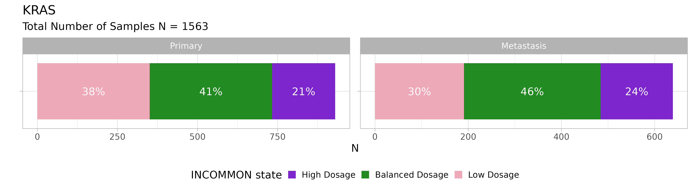

library(INCOMMON)
#> Warning: replacing previous import 'cli::num_ansi_colors' by
#> 'crayon::num_ansi_colors' when loading 'INCOMMON'
library(dplyr)
#>
#> Attaching package: 'dplyr'
#> The following objects are masked from 'package:stats':
#>
#> filter, lag
#> The following objects are masked from 'package:base':
#>
#> intersect, setdiff, setequal, union
library(cli)Downstream of copy number and multiplicity inference, INCOMMON can interpret the mutant genome in terms of the mutant dosage of tumour suppressor genes (TSGs) and oncogenes.
Full inactivation of TSG is detected as mutations high mutant dosage, resulting from pure loss of heterozygosity (LOH) or copy-neutral LOH (CNLOH). Full activation of oncogenes is also identified as mutations with high mutant dosgae, resulting from copy gains of the mutant allele.
3.1 Genome interpretation of 1779 pancreatic adenocarcinoma samples
3.1.1 INCOMMON classification
We have used INCOMMON to make the inference on all prostate cancer
(PRAD) samples from the MSK-MET cohort. The results are sored in
MSK_PRAD_output. The package provides these example
data
data("MSK_PAAD_output")
print(MSK_PAAD_output$input)
#> # A tibble: 7,839 × 186
#> sample tumor_type purity chr from to ref alt NV DP gene
#> <chr> <chr> <dbl> <chr> <dbl> <dbl> <chr> <chr> <int> <int> <chr>
#> 1 P-0000142 PAAD 0.4 chr12 2.54e7 2.54e7 C C 273 1404 KRAS
#> 2 P-0000142 PAAD 0.4 chr17 7.58e6 7.58e6 G G 53 671 TP53
#> 3 P-0000142 PAAD 0.4 chr2 4.77e7 4.77e7 T T 31 481 MSH2
#> 4 P-0000142 PAAD 0.4 chr5 1.28e6 1.28e6 G G 34 227 TERT
#> 5 P-0000783 PAAD 0.8 chr12 2.54e7 2.54e7 C C 474 941 KRAS
#> 6 P-0000783 PAAD 0.8 chr5 1.12e8 1.12e8 G G 164 424 APC
#> 7 P-0000783 PAAD 0.8 chr11 8.60e7 8.60e7 T T 210 601 EED
#> 8 P-0000783 PAAD 0.8 chr13 3.29e7 3.29e7 TC TC 160 493 BRCA2
#> 9 P-0000879 PAAD 0.6 chr7 1.40e8 1.40e8 A A 308 736 BRAF
#> 10 P-0000879 PAAD 0.6 chr1 1.15e8 1.15e8 T T 188 506 NRAS
#> # ℹ 7,829 more rows
#> # ℹ 175 more variables: HGVSp_Short <chr>, Entrez_Gene_Id <dbl>, Center <chr>,
#> # NCBI_Build <chr>, Chromosome <chr>, Strand <chr>, Consequence <chr>,
#> # Variant_Classification <chr>, Variant_Type <chr>, Tumor_Seq_Allele2 <chr>,
#> # dbSNP_RS <chr>, dbSNP_Val_Status <lgl>, Matched_Norm_Sample_Barcode <lgl>,
#> # Match_Norm_Seq_Allele1 <lgl>, Match_Norm_Seq_Allele2 <lgl>,
#> # Tumor_Validation_Allele1 <lgl>, Tumor_Validation_Allele2 <lgl>, …
print(MSK_PAAD_output$parameters)
#> # A tibble: 1 × 11
#> k_max purity_error num_cores iter_warmup iter_sampling num_chains results_dir
#> <dbl> <dbl> <dbl> <dbl> <dbl> <dbl> <chr>
#> 1 8 0.05 4 1000 2000 4 ~/INCOMMON_…
#> # ℹ 4 more variables: generate_report_plot <lgl>, reports_dir <chr>,
#> # stan_fit_dump <lgl>, stan_fit_dir <chr>We have made the inference on 7839 mutations across 1779 samples,
with k_max=8, purity_error=0.05, running
num_chains=4 MC sampling chains on num_cores=4
CPU cores, using iter_warmup=1000 warmup iterations and
iter_sampling=2000 sampling iterations.
3.1.2 Gene mutant dosage
For each gene mutation, the mutant dosage can be computed. INCOMMON
exploits the full posterior distribution
of k and m values to compute the mean Fraction
of Alleles with the Mutation (FAM) as
.
This can be done through the function compute_expectations.
Samples can be then classified with respect to a mutant gene as “Low
Dosage”, “Balanced Dosage” or “High Dosage”, using gene-role specific
thresholds. By default, INCOMMON uses thresholds optimised for survival
analysis, in function mutant_dosage_classification:
MSK_PAAD_output = mutant_dosage_classification(MSK_PAAD_output)
#> Joining with `by = join_by(id)`The FAM column is now added to the object. We can take a
look at the inferred FAM for KRAS mutations using the function
show_FAM:
show_FAM(MSK_PAAD_output, gene = 'KRAS') %>% dplyr::arrange(dplyr::desc(purity))
#> # A tibble: 1,576 × 10
#> sample gene gene_role NV DP purity purity_map eta_map FAM class
#> <chr> <chr> <chr> <int> <int> <dbl> <dbl> <dbl> <dbl> <chr>
#> 1 P-0005980 KRAS oncogene 268 505 0.9 0.871 105. 5.97e-1 Bala…
#> 2 P-0009045 KRAS oncogene 695 1211 0.9 0.942 183. 5.71e-1 Bala…
#> 3 P-0050275 KRAS oncogene 634 1121 0.9 0.777 197. 2.56e-5 Low …
#> 4 P-0000783 KRAS oncogene 474 941 0.8 0.747 224. 6.00e-1 Bala…
#> 5 P-0005815 KRAS oncogene 278 605 0.8 0.818 191. 5.00e-1 Bala…
#> 6 P-0008013 KRAS oncogene 129 786 0.8 0.689 164. 1.67e-1 Low …
#> 7 P-0012926 KRAS oncogene 226 818 0.8 0.717 249. 1.65e-1 Low …
#> 8 P-0017349 KRAS oncogene 770 953 0.8 0.747 153. 8.48e-1 High…
#> 9 P-0017552 KRAS oncogene 407 816 0.8 0.645 154. 5.71e-1 Bala…
#> 10 P-0029168 KRAS oncogene 406 964 0.8 0.695 213. 5.00e-1 Bala…
#> # ℹ 1,566 more rowsFor example, for the first mutation, given an estimated purity and total sequencing depth , we would expect reads from tumour cells. The FAM corresponds to the fraction of tumour reads that carry the variant (), which is approximately . For an oncogene, such a value of FAMcorresponds to the “Balanced Dosage” class.
3.1.3 Visulasing the distribution of mutant dosage classes
We can visualise the distribution of INCOMMON classes for a specific
gene and tumour type using the function
plot_class_fraction.
For instance, we can take a look at the distribution for KRAS mutations:
plot_class_fraction(x = MSK_PAAD_output, gene = 'KRAS')
Across 1563 KRAS mutant samples, the majority have a balanced dosage, but interestingly, KRAS mutant dosage tends to increase in metastases.
We can also look at TP53:
plot_class_fraction(x = MSK_PAAD_output, gene = 'TP53')Primary PAAD tumours with TP53 mutations have a majority of low dosage configurations, but the dosage strongly increases in metastases in favour of balanced and high dosage configurations.